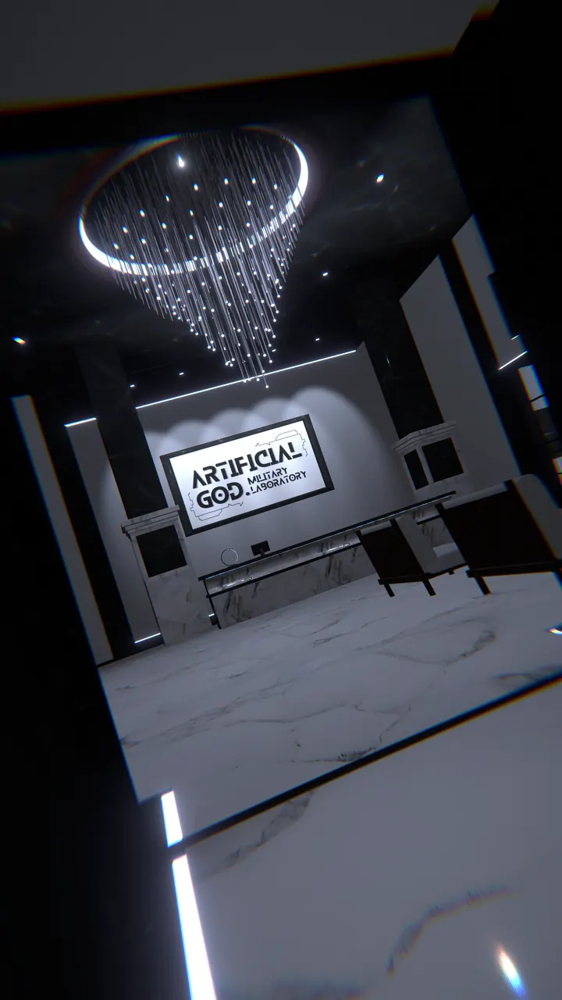
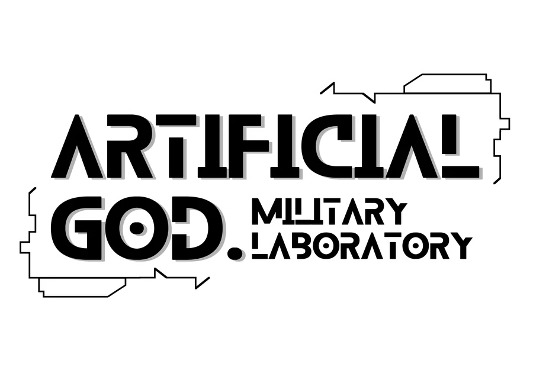

01

全ては我等が御国の為に。

事業内容
BUSINESS FIELD戦争の勝利を齎すため日々研究に勤しんでおります。
軍事研究だけでなく、皆様の暮らしをより良いものとすべく医療、AI技術、家庭用装備品等様々な分野の開発を行っております。
02
医療
03
AI
04
家庭用装備品
戦闘用人工神
CREATURA私たちArtificial God.が独自に研究を行っている人工神兵器です。
一人でおよそ一個大隊に勝る戦闘力を誇ります。
素体が人間なので維持コストも最低限で済む設計となっております。
この発明は必ずや我が国に勝利を齎すでしょう。


Creatura一人で、およそ一個大隊に勝る戦闘力。
素体に選ばれた方のご遺族には協力報酬と見舞金が支払われます。
あらゆる苦悩から解き放たれ、人類の羨望の的となれることをお約束いたします。
MOVIE
Creatura素体募集
素体募集のご案内を映像でご覧いただけます。


被験者募集
EVENTCreaturaとの簡単な対話実験にご参加いただける被験者の方を募集しています。
| 日時 | 隔週水曜日 22:00~ |
|---|---|
| 参加方法 | 参加されるという方は21:55に公式Xから告知されます担当研究員にリクエストインバイトをお送りください。 |
| 事前のご案内 | 当日にも案内はございますが被験者の方へをお読みいただいておくとスムーズに実験が進められるかと思います。 |
※命の保証はございません。
CONTACT
お問い合わせフォームを開く
お問い合わせ
ご感想・ご要望は専用フォームよりお寄せください。お名前は匿名でも構いません。